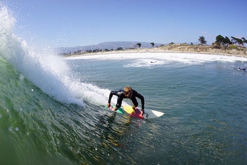

Sands/Coal Oil Point
... is located next to Coal Oil Point Natural Reserve, a protected habitat in Isla Vista, also next to the University of California Santa Barbara. The sand bars in this area provide a nice break for local surfers to enjoy.
